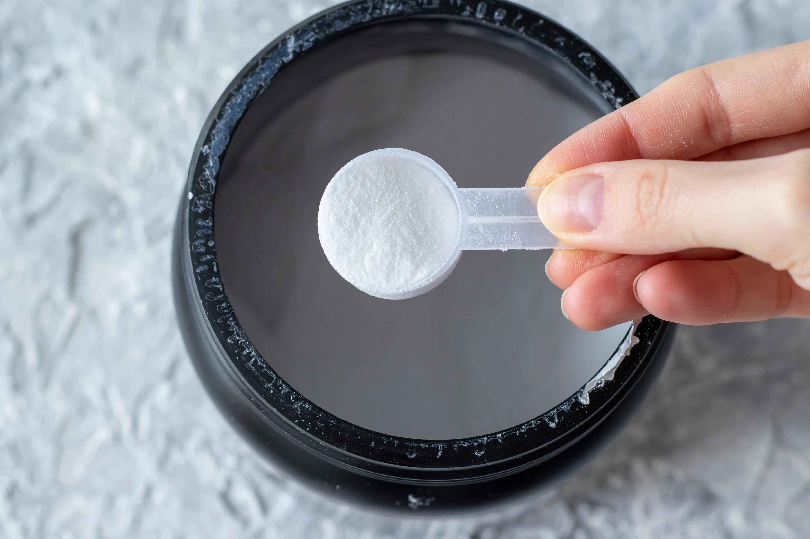

Pre-Workout — енергия и фокус преди тренировка
Pre-Workout добавките съдържат комбинация от вещества, които подобряват фокуса, издръжливостта и силата по време на тренировка. Те действат чрез увеличаване на енергийния метаболизъм и притока на кръв към мускулите.
Основни съставки и ефекти
- Кофеин – повишава енергията, концентрацията и мотивацията (3–6 mg/kg).
- Бета-аланин – намалява умората и подобрява издръжливостта при високоинтензивни усилия.
- Цитрулин малат – подобрява кръвообращението и усещането за „помпа“.
- Креатин – често се включва за сила и експлозивност.
- Таурин, тирозин, витамини B-комплекс – подпомагат нервната система и фокуса.

Как да използваме
Приеми 1 доза (в зависимост от продукта) около 30 минути преди тренировка. Избягвай употреба вечер, тъй като кофеинът може да наруши съня. При чувствителност към стимуланти избирай формули без кофеин („stim-free“).